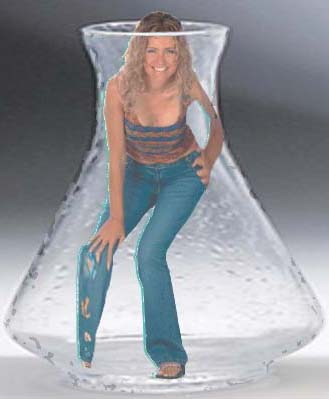

|
BONSAILICIA
| |
Lo sapevate? La nota
conduttrice televisiva Licia Colò si è adoperata per far chiudere il sito
www.gattibonsai.it, ispirato al più noto
www.bonsaikitten.com, nel quale, tramite evidenti trucchi di
fotoritocco, si spiega come far crescere un gatto all'interno di una piccola
bottiglia, al fine di fargli assumere la forma e le dimensioni desiderate.
Lo scherzo, magari di dubbio gusto, è palesemente evidente, e peraltro
neanche Vulvia di RIEDUCATIONAL CHANNEL avrebbe mai osato pensare che
si potesse far venir su un gatto di forma parallelepipeidale (si dirà così)
semplicemente mettendolo in una bottiglia da piccolo.
Le mie ipotesi erano pertanto tre:
- Licia Colò è molto meno intelligente di Vulvia (..ed ancor meno i
poliziotti postali che si sono adoperati per far chiudere il sito)
- Licia Colò pensa sul serio che ci sia gente che, ispirata da un sito
palesemente demenziale, inizi ad infilare gente e oggetti nelle bottiglie
- Licia Colò era in cerca di pubblicità, per motivi suoi
Spesso la verità però è più complessa della teoria... ed in effetti le tre
ipotesi erano tutte vere... e ne ho le prove... osservate queste immagini,
ottenute forzando il firewall (per i meno esperti: entrando nel computer)
della Rai TV, nella zona riservata al programma della Colò (non so come si
chiami ma ha a che fare con gli animali)
|
|

|

|
| |
Da queste immagini si evince
chiaramente che:
- Licia Colò è molto meno intelligente di Vulvia, visto che senza motivo
va in giro ad infilarsi nelle bottiglie (gli ampi sorrisi la confermano
consenziente)
- Licia Colò pensa davvero che ci sia gente che va in giro ad infilare
cose nelle bottiglie, dal momento che ella stessa ha infilato in bottiglie
ella stessa
- Licia Colò era in cerca di pubblicità, visto che ha parlato di
"torture su poveri gattini", pur sapendo com'è divertente e piacevole
essere ficcato in una bottiglia
Questo resti per i posteri, che non si facciano travolgere dalle campagne di
ipocrisia e perbenismo.
P.S.: ...ah, le immagini sono taroccate, è tutto uno scherzo, per
favore nessuno, prendendo esempio da questo pazzo furioso (cioè io), vada ad
infilare Licia Colò in una bottiglia, come se fosse un messaggio o un
vascello
Si ringrazia
BELLUOMO.COM per questa pagina
|
|